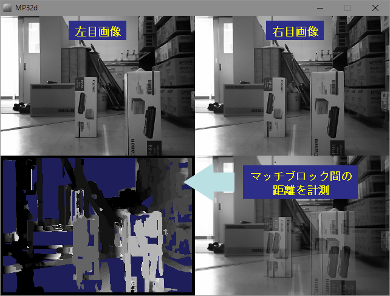

領域処理と画像間演算
(1)
窓（ウィンドウ）処理
窓処理による画像合成
(2)
マスク処理
マスク処理による画像合成
(3)
ラベリングによる領域分割
走査法によるラベリング
再帰的探索法によるラベリング
(4)
独立領域（オブジェクト）の抽出
(5)
オブジェクト領域の重心
重心位置の認識
(6)
領域の膨張（拡張）
(7)
領域の収縮（縮小）
(8)
膨張と収縮の効果
(9)
α-ブレンディング
(10)
エンボス（Emboss）処理
(11)
テンプレートマッチング
(12)
ブロックマッチング
(13)
ステレオ画像処理（視差画像）

 走査法によるラベリング
再帰的探索法によるラベリング
走査法によるラベリング
再帰的探索法によるラベリング